Chapter 01
Introduction
The MissionWeaver GCS monitors and controls an aircraft from the ground. A handheld unit, it sits inline between your ground station software (Mission Planner, QGroundControl) and an RFD900 radio. It forwards MAVLink unchanged, so your existing tools work as usual, and reads a passive copy to drive its own interface. An internal RC receiver allows you to fly the aircraft manually.
What it does
- Monitoring. Six pages show link and aircraft state: radio, mission, vehicle, sticks, GPS, and HUD.
- Two GCS connections. USB serial or USB-Ethernet (MAVLink UDP).
- On-device radio config. Edit and apply SiK parameters, local or over-air, without a laptop.
- RC receiver setup. FrSky and ELRS binding, stick-mode check, and ELRS firmware flashing.
- Two-button control. Every action uses the two physical buttons.
What's in the box
The device ships fully assembled, with the RFD900 radio and an RC receiver already installed inside. You never have to open the case.
The box contains:
- MissionWeaver GCS unit
- 2× 915 MHz antennas
- USB-C cable
- Quick-start card
Which RC receiver is installed depends on the model you bought. The Hardware Overview chapter explains how to identify it.
Confirm all items are present before you leave for the flight line. A missing cable or antenna is easier to fix at the bench than in the field.
Who this guide is for
This guide is for UAS field operators setting up or running a flight with the MissionWeaver GCS. It assumes you can fly the aircraft and operate your ground station, and does not re-teach material their own manuals already cover. Radio and receiver internals appear only as deep as you need to set them safely.
If you are new to the device, read Chapters 2 to 5 in order, then use the guide as reference.
Chapter 02
Hardware Overview
The MissionWeaver GCS is a sealed enclosure with a display and two buttons on the front, USB-C and antenna connectors, and the radio and RC receiver mounted inside.
Display
The display is a 2.42-inch, 128 by 64 pixel monochrome OLED.
Buttons
The device has two physical buttons, Left and Right. They are the only controls. The Two-Button Interface chapter covers how they drive the device.
Connectors
- USB-C. Power and the data connection to your ground station. The device has no battery, so it powers on when you connect the cable.
- Antennas. The antennas for the RFD900. Attach the supplied antennas before you power on the device.
Internal radio and receiver
The RFD900 radio is mounted inside and connects to the 915 MHz antenna connector. An RC receiver is installed as well, either a FrSky or an ExpressLRS (ELRS) unit, determined by the variant you ordered.
To confirm which receiver you have, open Settings, then Receiver, and read the configured RC type.
External receiver
You can use an external RC receiver in place of the internal one. Connect it to the external SBUS input, then select it in software. See Set the RC type and source for the steps.
Chapter 03
Getting Started
This chapter takes you from connecting the device to confirmed telemetry, both on the screen and in your ground station.
Connect the hardware
The radio and receiver are already inside, so setup is two steps:
- Attach the supplied antenna to the antenna connector.
- Connect the device to your computer with the USB-C cable.
Power on and boot
The device powers on when you connect USB-C. It then probes the internal radio, enters AT mode, reads the radio's settings, and opens the MAVLink stream.
The device remembers the last baud rate that worked and tries it first, so a normal boot connects quickly. If that rate fails, for example after you change the radio configuration, it scans the other rates, which takes longer.
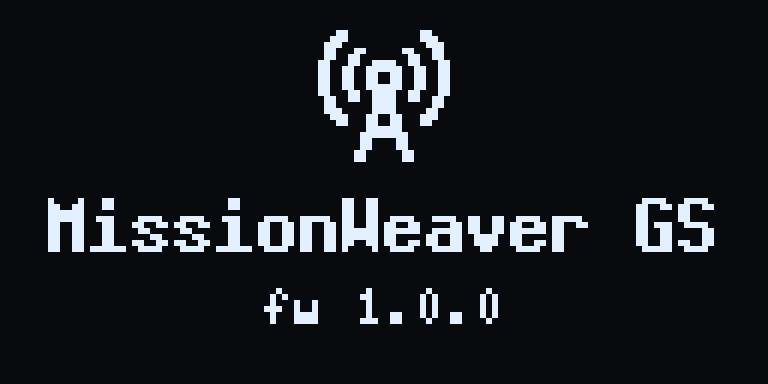
1Splash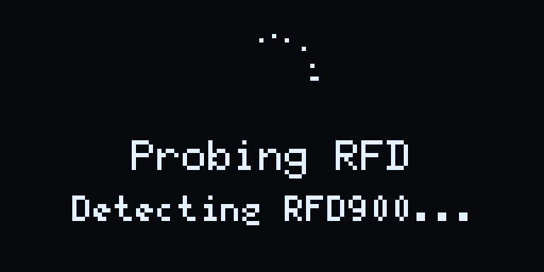
2Detecting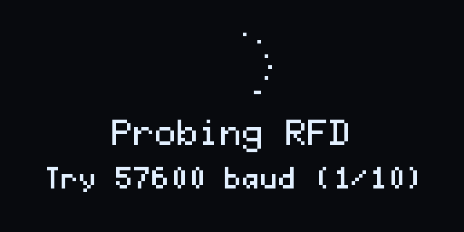
3Baud scan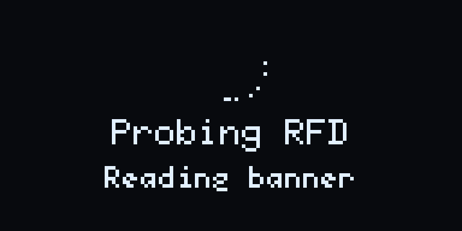
4Reading banner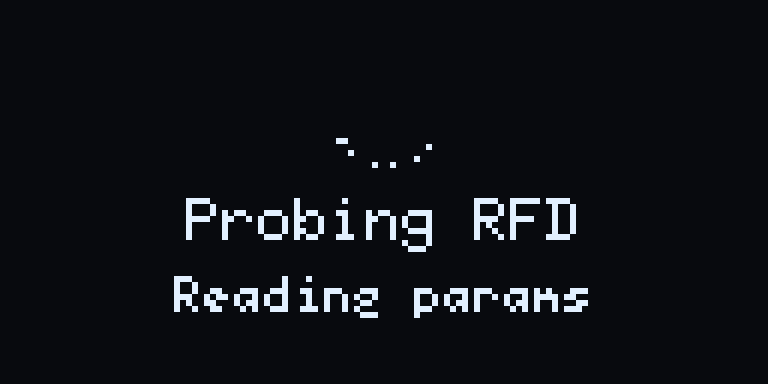
5Reading params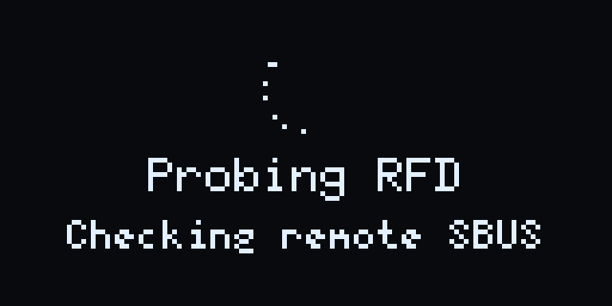
6Remote SBUS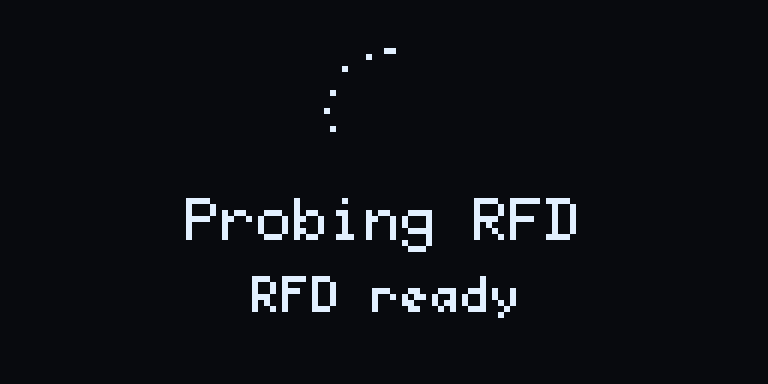
7RFD ready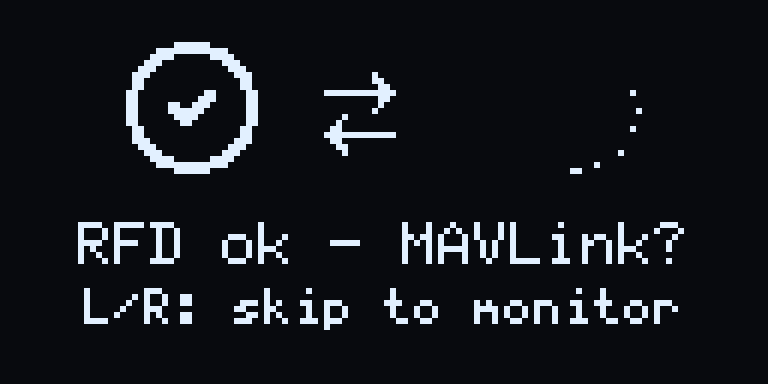
8Wait for MAVLinkThe boot sequence, from splash to waiting for MAVLink.
Connect your ground station
Once the link is established, you may open your ground station software to control the aircraft. In most cases, your ground station software should automatically detect the MissionWeaver and start the feed, via an emulated network connection. If it does not, or if you'd prefer to use a standard serial connection, see Connecting to Groundstation Software.
Confirm telemetry
Confirm the link before you rely on it:
- Check the link indicator in the screen header.
- Step through the monitor pages and confirm live aircraft data.
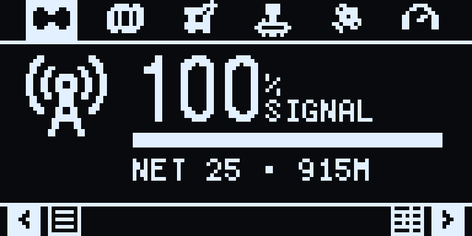
You can now monitor the aircraft. To control it, bind the RC receiver; see RC Receiver Setup.
Chapter 04
The Two-Button Interface
Two buttons run the entire device, Left and Right, and one rule covers almost every screen: Left navigates, Right acts, a left hold backs out, a right hold confirms an action, and holding both brings up quick actions. Learn that and you can work the device without looking anything up.
The five gestures
A click is a quick press and release. A hold means keeping a button down for about a second. From those two actions the device reads five gestures.
| Gesture | What it does |
|---|---|
| Click L | Navigate: previous item, or previous monitor page |
| Click R | Act: select, confirm, or next monitor page |
| Hold L | Back out one level, or open Settings from a monitor page |
| Hold R | Jump to the relevant settings for the current page, or confirm an action |
| Hold L + R | Open the quick-actions menu, from any screen |
The hint bar
The buttons keep these roles on most screens, but a few screens reassign them. You do not have to track which. After any press, the hint bar at the foot of the screen shows what Left and Right do at that moment, and auto-hides after 2 seconds.
Confirming risky actions
A few actions taken on the device can drop the link to a flying aircraft, mis-bind the receiver, or push bad settings to the far radio. The device guards each one behind a hold-to-confirm: hold the right button for a few seconds until it commits.
Chapter 05
Monitoring
Monitoring is the default mode, and it is where you spend most of a flight. The home screen is a ring of six pages. Click Left or Right to step through them, and the ring wraps at both ends. A strip of six icons across the top marks the page you are on, and the header shows "ARM" in the top-right when the aircraft is armed.
Radio

Link health at a glance: signal strength as a percentage and a bar, the network ID, and the frequency band. Check this page first. When the signal falls, expect telemetry to lag or drop.
Mission
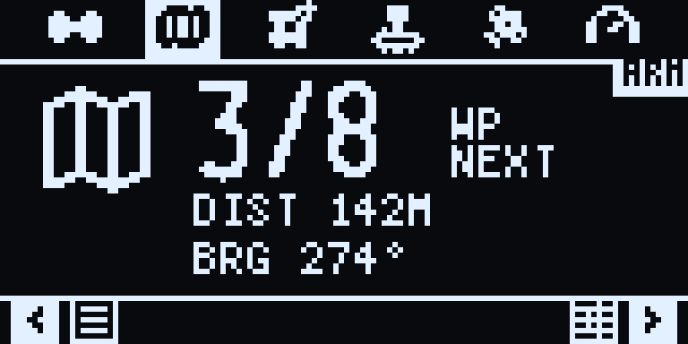
Progress through the flight plan: the current waypoint out of the total, with the distance and bearing to the next one.
Vehicle
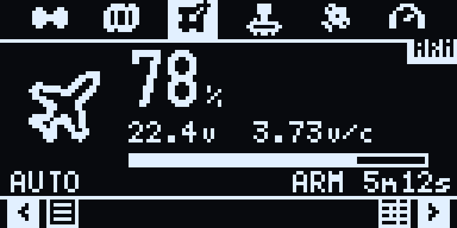
Power and arm state: battery charge with pack and per-cell voltage, the active flight mode, and how long the aircraft has been armed.
Controller
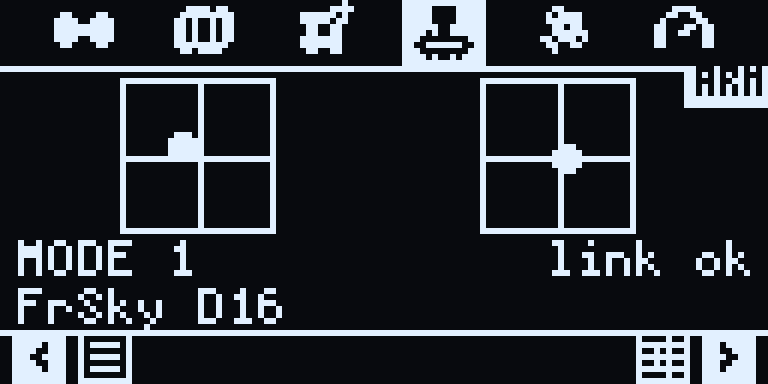
The live stick positions, the stick mode and RC type, and the receiver link state. Use it to confirm the transmitter is mapped and connected before you launch.
GPS
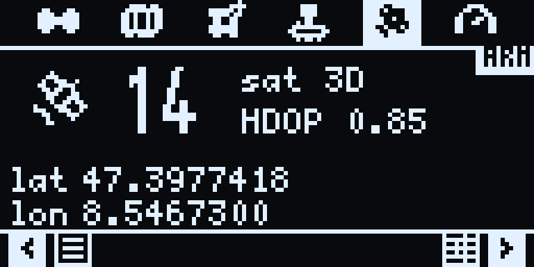
Position and fix quality: satellite count, fix type, HDOP, and latitude and longitude.
HUD
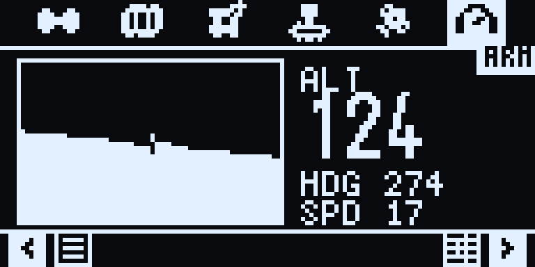
Attitude and motion: an artificial horizon with altitude, heading, and speed.
Status messages
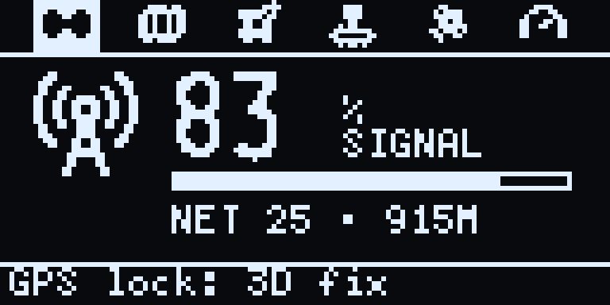
The latest message from the autopilot can appear along the bottom of any page, such as a GPS-lock or pre-arm notice. Turn it on under Display settings.
Auto-cycle
The ring can advance on its own at an interval you set, for hands-free monitoring. It pauses while you press a button and resumes afterward. Enable it under Display settings.
Chapter 06
Connecting to Groundstation Software
Connect the device to your laptop with the USB-C cable, then open your ground station. Mission Planner and QGroundControl both connect to it automatically. If one does not, add a serial connection by hand.
It connects automatically
Over USB the device brings up a small network and broadcasts telemetry via UDP. Mission Planner and QGroundControl listen for that stream and connect within a few seconds, with no port or baud rate to set. Watch for telemetry to appear on the monitor pages and in the ground station at the same time.
The stream is MAVLink over UDP on port 14550, if you need
to open a firewall.
If it does not connect, use serial
The same cable also exposes a standard serial port. Select that port in your ground station and connect. The baud rate does not matter; on a USB connection the setting is ignored.
- Mission Planner: choose the device's port at the top right, then click Connect.
- QGroundControl: open Application Settings, add a Serial link under Comm Links, choose the port, then connect.
Chapter 07
RC Receiver Setup
The device contains an internal RC receiver for controllers. Binding pairs your controller with the receiver with your transmitter. Set the RC type to match the transmitter, then run the bind wizard. The device drives the receiver and shows each transmitter step on screen.
Set the RC type and source
Open Settings, then Receiver. Set RC type to match your transmitter: ELRS, FrSky ACCESS, or FrSky ACCST D16. Leave RC src on Int to use the internal receiver, or switch to Ext for an external SBUS input.
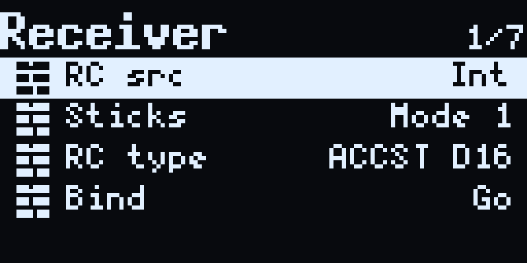
Start a bind
From the Receiver menu, select Bind. You can also hold Left and Right together from any screen to reach the pair prompt. Choose Yes to begin.
Bind an ELRS receiver
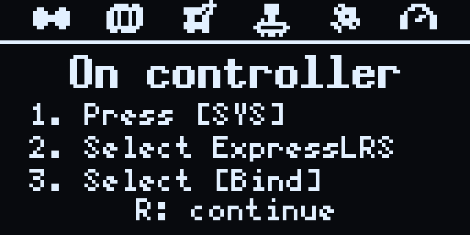
On the controller, press SYS, open ExpressLRS, then select Bind.
Bind a FrSky ACCESS receiver
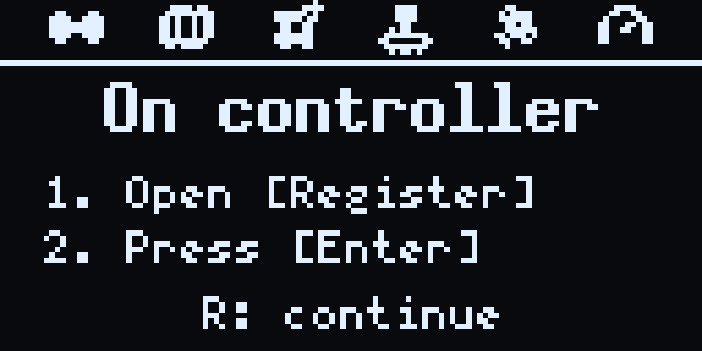
Open Register and press Enter.
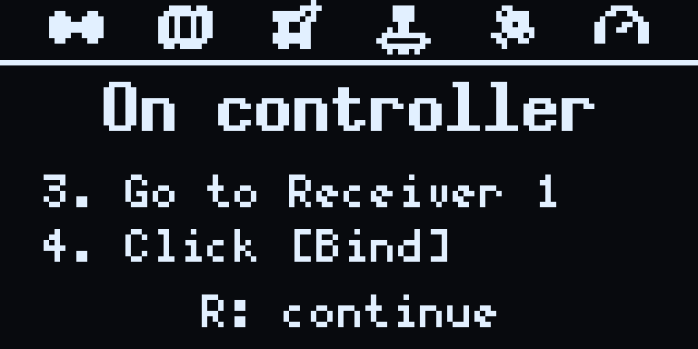
Go to Receiver 1 and click Bind.
Bind a FrSky ACCST D16 receiver
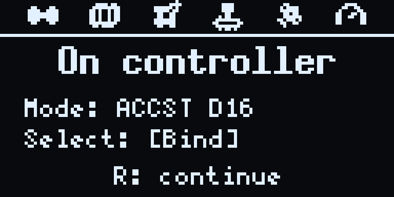
Set the mode to ACCST D16 and select Bind.
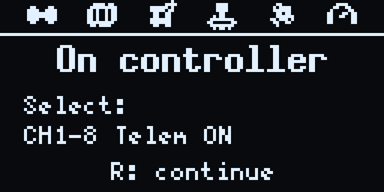
Select CH1-8 Telem ON.
Check the sticks
Open Settings, Receiver, Sticks to watch the live stick positions. If the two sticks do not show the way you hold them, cycle the stick mode, 1 to 4, until the preview matches your transmitter.
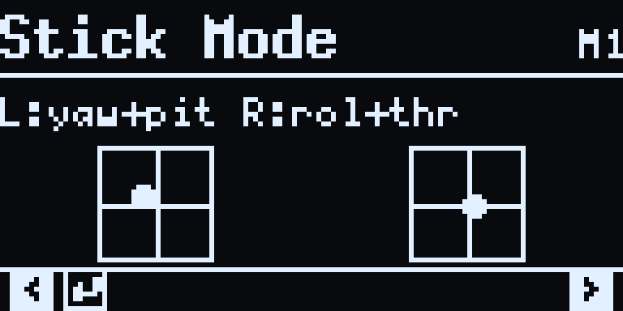
The stick mode only changes the on-device preview. It does not change the data sent to the aircraft. Configure stick mixing and channel mapping in your controller's model setup and on the aircraft.
Flash ELRS firmware
Update the ELRS receiver over its own Wi-Fi portal. When the receiver finds no controller, it starts a Wi-Fi access point you flash from.
- Power on the device with no paired controller online.
- Wait 60 seconds. The receiver starts a Wi-Fi network named
ExpressLRS RX. - Join that network from a phone or laptop, then open the portal in a browser.
- Flash the firmware for the BetaFPV 2.4 GHz RX Lite target.
Chapter 08
RFD Radio Configuration
The device has the ability to read and change RFD radio settings on-device, through the RFD Util menu.
Open RFD Util
Open Settings, then RFD Util. Editing interrupts the live MAVLink link, so the device asks you to confirm before it opens.
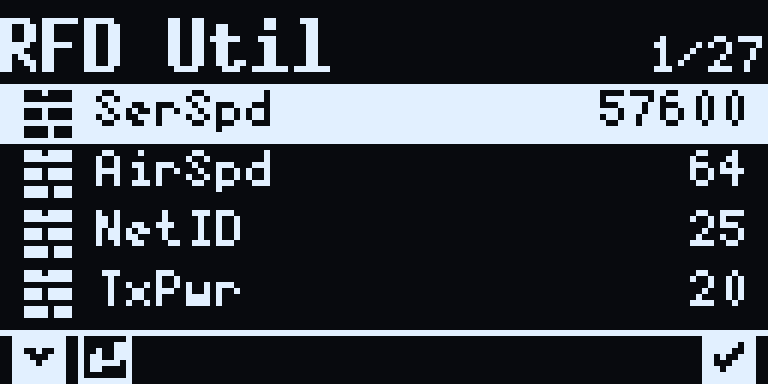
Edit a parameter
Select a row to change it. Most rows cycle through a list of preset values. Edits are staged, not live. The device holds each pending value against the current one, so nothing reaches the radio until you click apply.
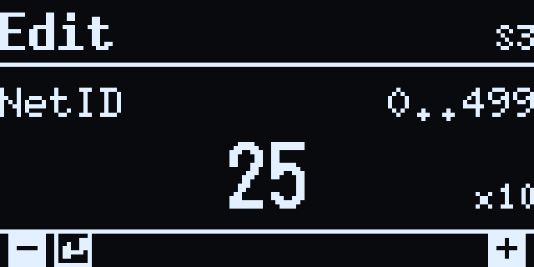
A numeric value such as the network ID opens this editor. Left and Right step the number, and repeated taps grow the step from 1 to 10 to 100.
A link only forms when both radios share the parameters that define the channel: network ID, frequency range, channel count, and air speed. Change one of these and the far radio has to match, which is what Apply remote is for.
Apply your changes
At the end, there are two options to commit changes.
- Apply writes the pending values to the local radio. The device reboots, and the link returns on its own.
- Apply remote sends the same change over the air to the far radio first, so both ends stay in step.
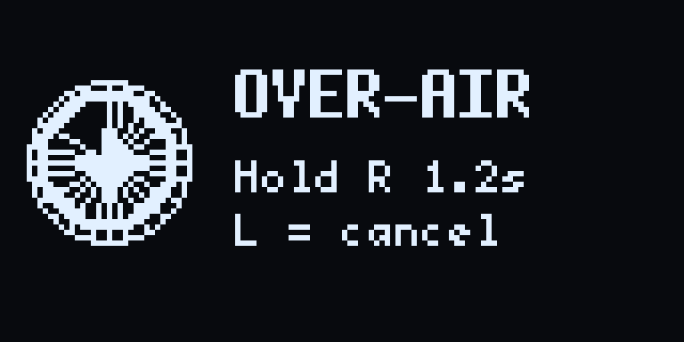
Over-air apply changes the far radio. Hold Right for about 1.2 seconds to confirm, or press Left to cancel.
Re-read, reset, and save
Re-read reloads the current values from the radio and drops any pending edits. Reset to defaults restores the radio's factory settings.
Factory reset clears every radio setting. Hold Right to confirm, or press Left to cancel.
If you leave with unsaved edits, the device asks what to do with them.
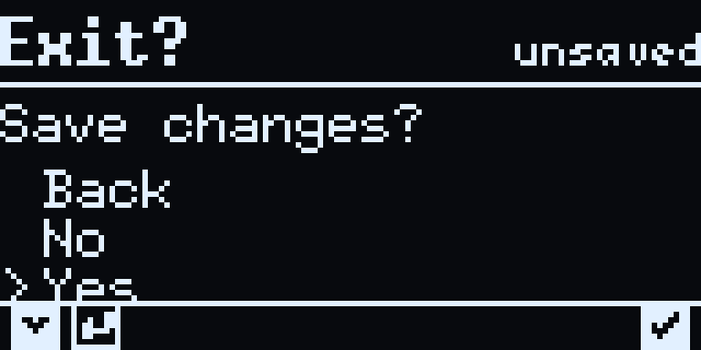
Choose Yes to save, No to discard, or Back to keep editing.
Configure from a laptop
The Serial interface may also be opened through standard RFDTools, you may connect at any baud rate as the MissionWeaver auto-detects the RFD's baud on startup.
Chapter 09
Quick Commands
Hold Left and Right together from any screen to open the quick-actions menu. It gives quick access to common commands sent to the aircraft and controls for the device itself.
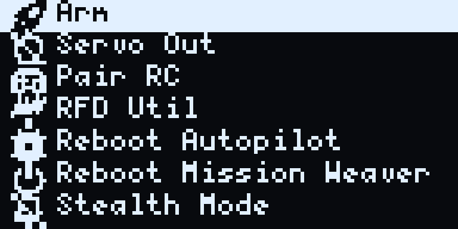
Arm and disarm
Arm commands the aircraft to arm, honoring its normal arming checks. Once armed, the same row reads Disarm.
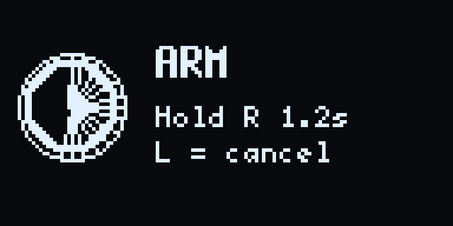
Arming is held behind a confirm. Hold Right for about 1.2 seconds, or press Left to cancel.
Enable servo outputs
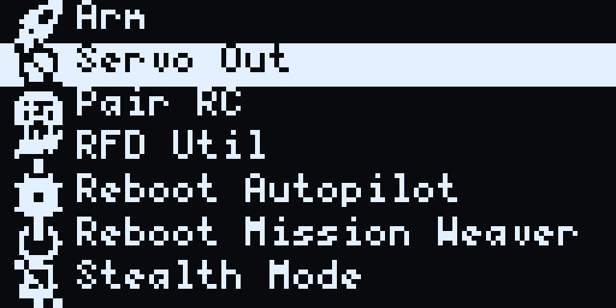
Servo Out turns on the aircraft's outputs, the same as releasing its safety switch. It uses the same hold-to-confirm as arming.
Reboot the autopilot
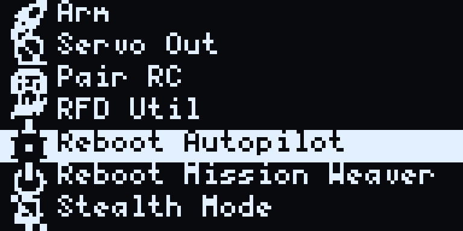
Reboot Autopilot restarts the aircraft's flight controller. The radios stay up, so telemetry returns once the autopilot finishes booting.
Stealth mode
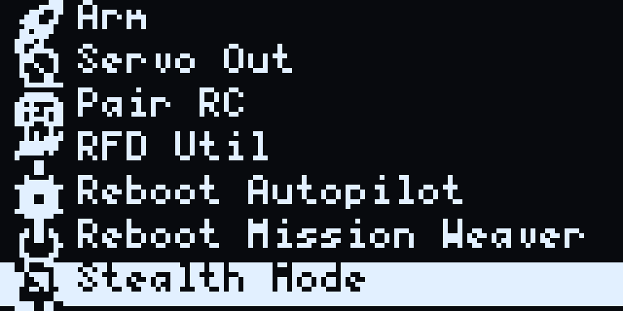
Stealth Mode turns off the display and the buzzer, so the device shows and sounds nothing, even through a reboot. Telemetry keeps flowing underneath. Use it for night or low-profile operations.
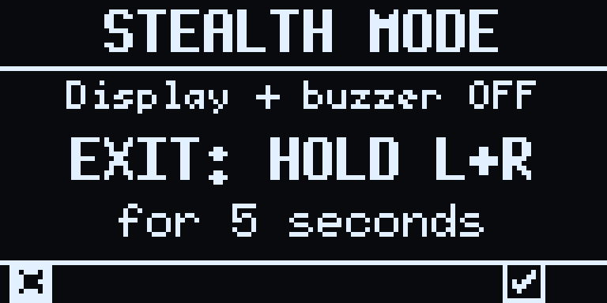
To leave stealth mode, hold Left and Right together for five seconds.
Chapter 10
Settings
From a monitor page, hold Left to open Settings. Click Left to move the cursor and click Right to open a category or change a value; hold Left to back out. Changes are saved as soon as you exit the settings menu, so there is no separate save step.

The categories are below, in menu order. Receiver and RFD Util open the flows documented in their own chapters.
Display
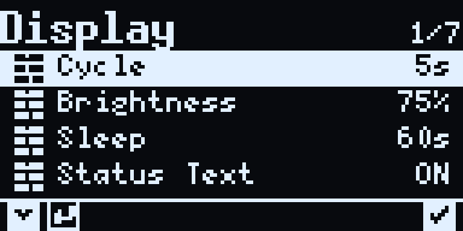
Brightness and Sleep, the idle time before the screen blanks, are self-explanatory. Cycle sets how often the monitor ring advances on its own. Status Text shows the autopilot's latest message on the monitor pages.
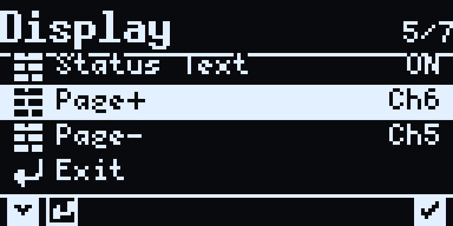
Page+ and Page- assign a transmitter channel, 5 to 16, to step the monitor ring forward or back, so you can change pages from a switch on your controller. Channels 1 to 4 are the sticks and cannot be used. Both are off by default.
Audio
Audio controls the buzzer, the device's only sound. Buzzer turns it on or off, and Volume sets the level. The buzzer chirps on button presses and warns on blocked or risky actions. It ships off, so the device stays quiet until you enable it.
Receiver
Receiver sets the RC type and the SBUS source, runs the bind wizard, and reboots the receiver. See RC Receiver Setup. With an external SBUS source, the receiver-specific rows show (ext) and do nothing.
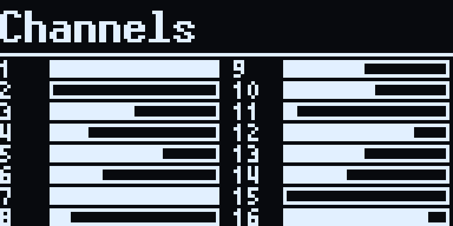
Channels shows the live value of every receiver channel as a bar, so you can check switches, trims, and failsafe before a flight.
Vehicle
Vehicle tunes how the device reads the battery. Cells is the pack size: leave it on Auto to infer the count from resting voltage, or set it yourself when the guess is wrong. Lo Cell sets a per-cell low-voltage warning; the buzzer sounds when any cell drops below it. It is off by default.
RFD Util
RFD Util opens the radio configuration editor, including re-read and factory reset. Entering it drops the MAVLink link, so the device asks you to confirm first. See the RFD Radio Configuration chapter.
About
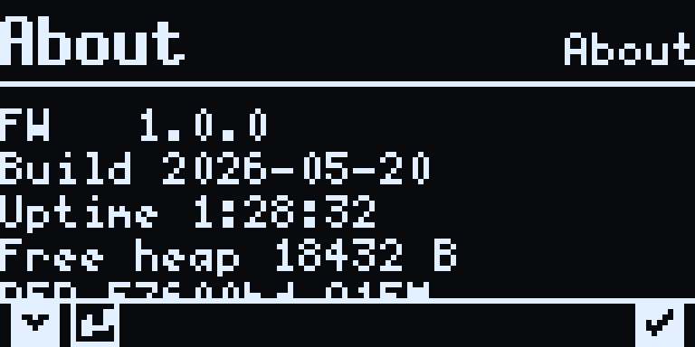
Firmware version and build date, uptime, free memory, and the detected RFD link with its baud and band, or RFD not detected. Quote these when you report a problem.
Update
Update installs new firmware from the device itself. It takes about a
minute and needs only the device and its USB-C cable. The firmware ships
as a .uf2 file: in update mode the device mounts on your
computer as a USB drive, and copying the file onto it flashes and
reboots automatically.
- From a monitor page, hold Left to open Settings.
- Click Left to move the cursor to Update, then click Right to select it.
- Hold Right to confirm. The device reboots into update mode and appears as a USB drive.
- In your file explorer, drag the downloaded
.uf2onto the device's drive. It flashes, then reboots into the new firmware on its own.

Update is guarded by a hold-to-confirm. Hold Right until it commits; the device then reboots into update mode. Firmware downloads and step-by-step instructions live on the firmware page.
Chapter 11
Troubleshooting
Most field problems are one of three: no telemetry to the laptop, no radio link, or no control link. Find your symptom below and work the fix.
No telemetry in the ground station
Auto-connect runs over UDP. Mission Planner sometimes fails to release UDP port 14550 from an earlier session, so it cannot pick up the stream and auto-connect errors out. Connect by serial instead, or restart Mission Planner to free the port. See Connecting to Groundstation Software.
No radio link, or a poor one
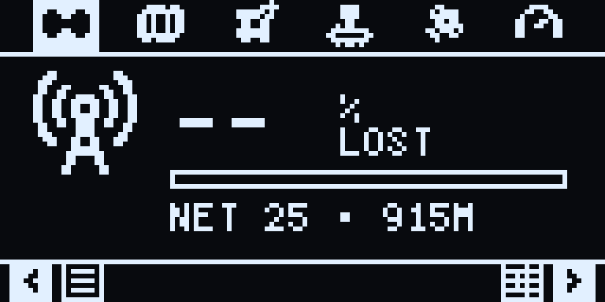
The Radio page reads LOST, or a low percentage that will not climb.
A link forms only when both radios agree on the channel: network ID, frequency range, channel count, and air speed. Confirm the local and remote settings match in RFD Util or RFDTools; see the RFD Radio Configuration chapter.
On the ground, another RFD radio or MissionWeaver nearby on the same settings can spoil the link. Move away from or power off any conflicting unit. If the link still will not form, reset both RFD900 radios to defaults and set them up again to match.
No control link
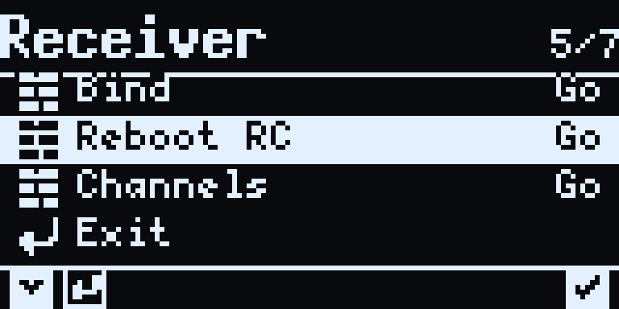
Recover the receiver from Settings, Receiver, Reboot RC.
If the controller is not on and bound within one minute of power-on, the receiver stops looking for a link and starts its own Wi-Fi setup mode. Turn the controller on, then reboot the receiver with Reboot RC or power-cycle the device. The receiver searches for the link again on the next start.
The radio is not detected
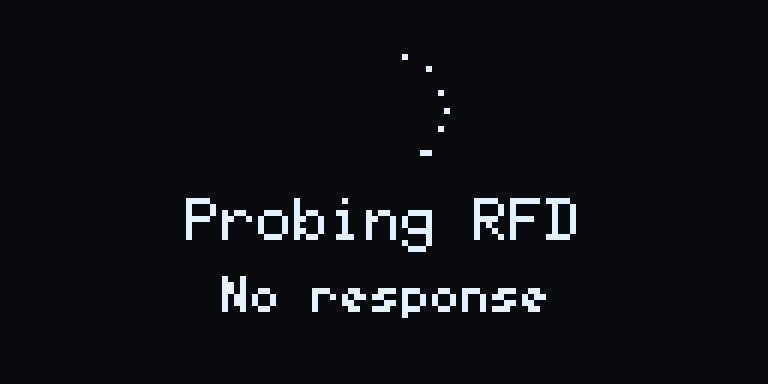
Boot stops on Probing RFD, No response.
The device cannot reach the RFD radio. Check that the radio is seated and powered, then reboot.
Telemetry is garbled
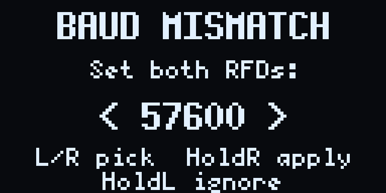
The device shows BAUD MISMATCH.
Bytes are flowing but the device cannot read them as MAVLink, usually because the autopilot's serial speed does not match the radio's. Pick a common rate with Left and Right, then hold Right to set both radios, or set the autopilot to match.
A button is stuck
The device shows BUTTON STUCK and pauses.
A button is held down or jammed. Free it and the device resumes on its own.
Getting support
Have the About page ready if you ask for help. Under Settings, About it lists the firmware version, build date, and the detected radio.